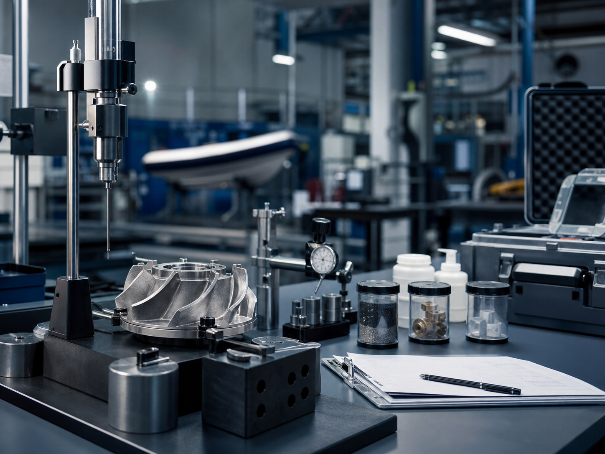

Продукция
Нужно подготовить оборудование или комплектующие к требованиям, связанным с морской отраслью.
Независимый технико-регуляторный консалтинг
Помогаем определить возможный маршрут, проверить документы, собрать доказательную базу и снизить риск замечаний и переделок.
Мы не являемся РМРС, органом сертификации или лабораторией и не выдаём официальные документы. Наша роль — независимый проектный офис подготовки.
Когда обращаются
Чаще всего проблема не в одном документе, а в отсутствии понятной картины: что уже готово, где пробелы и каким маршрутом двигаться дальше.
Нужно подготовить оборудование или комплектующие к требованиям, связанным с морской отраслью.
Нужно понять возможный маршрут подготовки работ, персонала, базы и документов.
Нужно оценить готовность методик, протоколов, оборудования и доказательной базы.
Замечания уже получены, но непонятно, как структурировать ответ и доработку материалов.
В проекте или закупке встречаются требования, связанные с РМРС, и нужен план действий.
Машиностроительная компания хочет выйти в морскую отрасль без хаоса на старте.
Что делаем
Первый продукт
За 5–10 рабочих дней анализируем задачу, текущие документы и возможный маршрут подготовки. На выходе — понятная дорожная карта.
Для предварительной оценки простой ситуации и быстрого понимания ближайших шагов.
Для компании с конкретной продукцией, услугой или комплектом технических документов.
Для сложных кейсов, замечаний, лабораторий, производств или нескольких направлений.
Точная стоимость зависит от объёма документов, сложности продукции или услуги и текущего статуса задачи.
Процесс
Формат построен так, чтобы клиент видел порядок действий и не терял контроль над подготовкой.

Результат
Наша позиция
Мы помогаем компании подготовиться: структурировать документы, выявить пробелы, собрать доказательную базу и пройти процесс более организованно. Официальный результат зависит от применимой процедуры, состояния документации, результатов проверок, испытаний и решений уполномоченных сторон.
Заявка
Оставьте заявку на вводную консультацию. Мы уточним ситуацию и предложим подходящий формат предварительной диагностики.